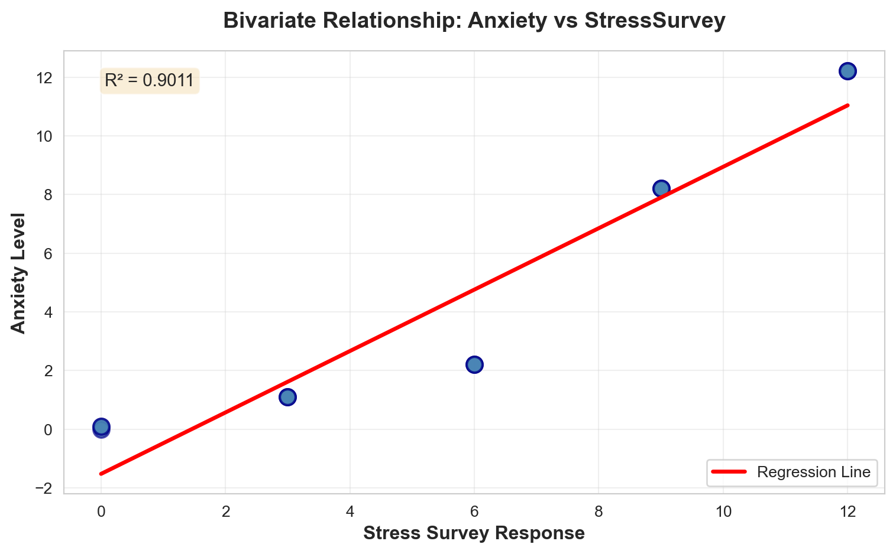
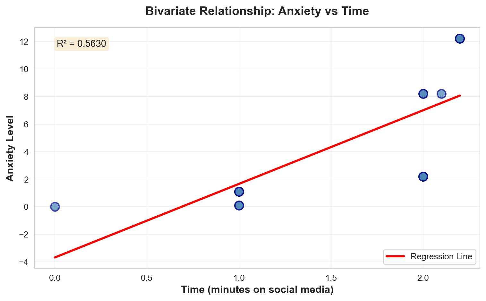
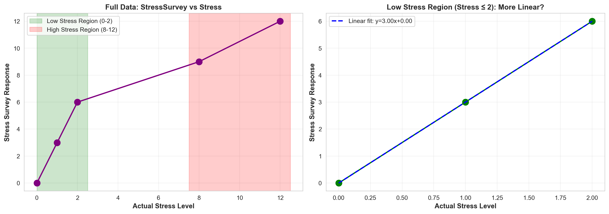

| Stress | StressSurvey | Time | Anxiety | |
|---|---|---|---|---|
| 0 | 0 | 0 | 0.0 | 0.00 |
| 1 | 0 | 0 | 1.0 | 0.10 |
| 2 | 0 | 0 | 1.0 | 0.10 |
| 3 | 1 | 3 | 1.0 | 1.10 |
| 4 | 1 | 3 | 1.0 | 1.10 |
| 5 | 1 | 3 | 1.0 | 1.10 |
| 6 | 2 | 6 | 2.0 | 2.20 |
| 7 | 2 | 6 | 2.0 | 2.20 |
| 8 | 2 | 6 | 2.0 | 2.20 |
| 9 | 8 | 9 | 2.0 | 8.20 |
| 10 | 8 | 9 | 2.0 | 8.20 |
| 11 | 8 | 9 | 2.1 | 8.21 |
| 12 | 12 | 12 | 2.2 | 12.22 |
| 13 | 12 | 12 | 2.2 | 12.22 |
| 14 | 12 | 12 | 2.2 | 12.22 |
Regression & Interpretability Challenge
Don’t Trust Linear Models - The Perils of Non-Linearity
🗑️ Regression Challenge - Linear Model Interpretability
Introduction
This document explores the risk of relying on linear regression when the relationships are non-linear. Here we are having a simple scenario where researchers study the relationship between social media use and anxiety. We know that stress is a major cause of anxiety, and we also suspect that social media use might cause anxiety. So we need to “control for” stress to see if social media has an independent effect on anxiety.
Key Insight: Even when researchers carefully select control variables, non-linear relationships can make linear regression give completely wrong results.
As part the challenge we know what our variables are:
\[ \begin{aligned} Anxiety &\equiv \textrm{Anxiety Level measured by fMRI activity}\\ Stress &\equiv \textrm{Stress Level measured by cortisol level in blood}\\ Time &\equiv \textrm{\# of minutes on social media in last 24 hours} \end{aligned} \]
And we know the true relationship between these variables is:
\[ Anxiety = Stress + 0.1 \times Time \]
The Generic Multiple Regression Equation is as: \[ Y = \beta_0 + \beta_1 X_1 + \beta_2 X_2 + \epsilon \]
In current case example the equation is: \[ Anxiety = \beta_0 + \beta_1 \times Stress + \beta_2 \times Time + \epsilon \]
Where The True Coefficients are:
- \(\beta_0 = 0\) (intercept is zero)
- \(\beta_1 = 1\) (coefficient on Stress is 1)
- \(\beta_2 = 0.1\) (coefficient on Time is 0.1)
Why This Matters: When we run regression analysis, we’re trying to estimate these \(\beta\) coefficients. If our regression gives us coefficients that are very different from these true values, we know our model is wrong—even if it has good statistical fit!
In real world, researchers can’t measure stress directly with expensive blood tests. Instead, they use surveys and self-reports as a proxy for stress (refer StressSurvey below). This analysis will show how using a proxy for stress with a non-linear relationship with the true stress level can lead to regression results that are statistically significant but fundamentally misleading about the true causal relationships.
Data for the scenario
Data outcome shows that \(Anxiety = Stress + 0.1 \times Time\) indeed holds perfectly. The coulmn called StressSurvey shows responses from survey used as a proxy measuring stress levels. As you can see coulmn StressSurvey has a monotonic relationship with actual measured stress levels.

Question 1: Bivariate Regression Analysis with StressSurvey
Question: Run a bivariate regression of Anxiety on StressSurvey. What are the estimated coefficients? How do they compare to the true relationship?
Answer:
Bivariate Regression: Anxiety ~ StressSurvey
==================================================
OLS Regression Results
==============================================================================
Dep. Variable: Anxiety R-squared: 0.901
Model: OLS Adj. R-squared: 0.893
Method: Least Squares F-statistic: 118.4
Date: Wed, 12 Nov 2025 Prob (F-statistic): 6.68e-08
Time: 23:09:44 Log-Likelihood: -27.079
No. Observations: 15 AIC: 58.16
Df Residuals: 13 BIC: 59.57
Df Model: 1
Covariance Type: nonrobust
================================================================================
coef std err t P>|t| [0.025 0.975]
--------------------------------------------------------------------------------
const -1.5240 0.707 -2.156 0.050 -3.051 0.003
StressSurvey 1.0470 0.096 10.883 0.000 0.839 1.255
==============================================================================
Omnibus: 2.125 Durbin-Watson: 0.545
Prob(Omnibus): 0.346 Jarque-Bera (JB): 1.642
Skew: -0.701 Prob(JB): 0.440
Kurtosis: 2.186 Cond. No. 12.9
==============================================================================
Notes:
[1] Standard Errors assume that the covariance matrix of the errors is correctly specified.
==================================================Estimated Intercept (β₀): -1.5240
Estimated StressSurvey coefficient (β₁): 1.0470
R-squared: 0.9011
True Relationship Coefficients:
True Intercept (β₀): 0.0000
True Stress coefficient (β₁): 1.0000
True Time coefficient (β₂): 0.1000The true relationship is: \(Anxiety = Stress + 0.1 \times Time\) Note: Our model is using StressSurvey as a proxy for Stress in the regression, not the actual Stress level. So the direct comparison of coefficients is not meaningful.
Comparison to True Relationship:
The bivariate regression of Anxiety on StressSurvey yields the following estimated coefficients:
- Intercept (β₀): -1.5240
- StressSurvey coefficient (β₁): 1.0470
- R-squared: 0.9011This suggests an excellent fit to the data, but it is not capturing the true relationship. The true relationship involves Stress and Time, not just StressSurvey. The StressSurvey coeffiecient of 1.0470 represents the effect of StressSurvey on Anxiety, but missing the time component entirely, which biases the interpretation of the coefficient.
When time is omitted from the model, the StressSurvey coefficient captures both the Stress (through StressSurvey) and Time effects, which is why it is not equal to the true Stress coefficient of 1 and leads to a biased interpretation of the coefficient.
Question 2: Visualization of Bivariate Relationship
Question: Create a scatter plot with the regression line showing the relationship between StressSurvey and Anxiety. Comment on the fit and any potential issues.
Answer:

The scatter plot above shows linear relationship between StressSurvey and Anxiety, along with the fitted regression line with R-squared value of 0.9011. Here are key observations about the fit and potential issues:
R-squared: 0.9011
R-squared percentage: 90.11%Fit Assessment:
R-squared Value: The R-squared value indicates how well the regression line explains the variance in Anxiety. A high R-squared suggests a reasonably good linear fit, but this can be misleading when the underlying relationship is non-linear.
Visual Fit: The regression line appears to pass through the general pattern of the data points, with most points clustered relatively close to the line.
Potential Issues:
Omitted Variable Bias: The true relationship is \(Anxiety = Stress + 0.1 \times Time\), but this model only includes StressSurvey. The omitted Time variable means that the regression line is trying to capture both the Stress effect and the Time effect through StressSurvey alone, which could distort the relationship.
Hidden Non-Linear Pattern: In our bivariate regression model relationship appears to be linear. However, the underlying relationship between StressSurvey and the true Stress level is non-linear (see Figure 1). This non-linearity will cause problems when we add Time variable to the model.
Precision of R-squared: The high R-squared value gives a false sense of precision. It suggests that the model is a good fit for the data, but in reality, the model is not capturing the true relationship due to the omitted Time variable.
Question 3: Bivariate Regression Analysis with Time
Question: Run a bivariate regression of Anxiety on Time. What are the estimated coefficients? How do they compare to the true relationship?
Answer:
Bivariate Regression: Anxiety ~ Time
==================================================
OLS Regression Results
==============================================================================
Dep. Variable: Anxiety R-squared: 0.563
Model: OLS Adj. R-squared: 0.529
Method: Least Squares F-statistic: 16.75
Date: Wed, 12 Nov 2025 Prob (F-statistic): 0.00127
Time: 23:09:45 Log-Likelihood: -38.223
No. Observations: 15 AIC: 80.45
Df Residuals: 13 BIC: 81.86
Df Model: 1
Covariance Type: nonrobust
==============================================================================
coef std err t P>|t| [0.025 0.975]
------------------------------------------------------------------------------
const -3.6801 2.233 -1.648 0.123 -8.504 1.144
Time 5.3406 1.305 4.093 0.001 2.522 8.160
==============================================================================
Omnibus: 1.026 Durbin-Watson: 0.661
Prob(Omnibus): 0.599 Jarque-Bera (JB): 0.749
Skew: -0.162 Prob(JB): 0.688
Kurtosis: 1.955 Cond. No. 5.80
==============================================================================
Notes:
[1] Standard Errors assume that the covariance matrix of the errors is correctly specified.
==================================================Estimated Intercept (β₀): -3.6801
Estimated Time coefficient (β₁): 5.3406
R-squared: 0.5630
True Relationship Coefficients:
True relationship: Anxiety = Stress + 0.1 x Time
True Intercept (β₀): 0.0000
True Stress coefficient (β₁): 1.0000
True Time coefficient (β₂): 0.1000Comparison to True Relationship:
The bivariate regression of Anxiety on Time yields the following estimated coefficients (see output above for exact values):
- Intercept (β₀): The estimated intercept differs from the true value of 0
- Time coefficient (β₁): The estimated coefficient differs from the true Time coefficient of 0.1
- R-squared: 0.5630
The estimated Time coefficient (5.3406) is Much larger than the true Time coefficient (0.1). The R-squared value of 0.5630 is also much lower than the true R-squared value of 1, indicating a moderate fit to the data.
Observations: The estimated Time coefficient (5.3406) is approximately 53 times larger than the true Time coefficient (0.1). This overestimation occurs because Time is correlated with Stress, and when Stress is omitted, Time coefficient captures the effect of Stress on Anxiety through Time. Thus leading to a biased interpretation of the coefficient.
This is a classic case of omitted variable bias. When we omit Stress (which is correlated with both Time and Anxiety), the Time coefficient becomes biased. The regression line is forced to “soak up” the effect of the omitted Stress variable, leading to a coefficient on Time that doesn’t reflect the true causal relationship.
Question 4: Visualization of Bivariate Relationship
Question: Create a scatter plot with the regression line showing the relationship between Time and Anxiety. Comment on the fit and any potential issues.
Answer:

R-squared: 0.5630
R-squared percentage: 56.30%The scatter plot above shows a positive linear relationship between Time and Anxiety, along with R-squared value of 0.5630. Here are key observations about the fit and potential issues:
Fit Assessment:
R-squared Value: The R-squared value (shown in the plot and calculated above) indicates how well the regression line explains the variance in Anxiety. Given that Time has a true coefficient of only 0.1 (much smaller than Stress’s coefficient of 1), we would expect a low R-squared value, indicating that Time alone explains very little of the variation in Anxiety.
Visual Fit: The regression line may appear to have a positive slope, but the relationship is weak. The data points show substantial scatter around the regression line, with many points far from the line. This is consistent with Time being a minor contributor to Anxiety compared to Stress.
Potential Issues:
Omitted Variable Bias: The model completely ommits Stress variable, which is a major predictor of Anxiety in the true relationship. The Time coefficient of 5.3406 is almost 53 times larger than the true Time coefficient of 0.1, as it’s capturing the effect of Stress on Anxiety through Time.
Poor Model Fit: With such a low R-squared (0.5630), the model provides a poor fit to the data. The model is estimating wrong causal relationship between Time and Anxiety. The coefficient is severely overestimated due to the omitted Stress variable.
Misleading Interpretation: If someone were to interpret the Time coefficient (5.3406) from this regression as the causal effect of Time on Anxiety, they would be wrong. The coefficient is biased due to the omitted Stress variable, and it doesn’t represent the true causal relationship.
Question 5: Multiple Regression Analysis
Question: Run a multiple regression of Anxiety on both StressSurvey and Time. What are the estimated coefficients? How do they compare to the true relationship?
Answer:
Multiple Regression: Anxiety ~ StressSurvey + Time
============================================================
OLS Regression Results
==============================================================================
Dep. Variable: Anxiety R-squared: 0.935
Model: OLS Adj. R-squared: 0.924
Method: Least Squares F-statistic: 86.32
Date: Wed, 12 Nov 2025 Prob (F-statistic): 7.54e-08
Time: 23:09:45 Log-Likelihood: -23.931
No. Observations: 15 AIC: 53.86
Df Residuals: 12 BIC: 55.99
Df Model: 2
Covariance Type: nonrobust
================================================================================
coef std err t P>|t| [0.025 0.975]
--------------------------------------------------------------------------------
const 0.5888 1.034 0.569 0.580 -1.664 2.841
StressSurvey 1.4269 0.172 8.287 0.000 1.052 1.802
Time -2.7799 1.111 -2.502 0.028 -5.201 -0.359
==============================================================================
Omnibus: 1.255 Durbin-Watson: 1.043
Prob(Omnibus): 0.534 Jarque-Bera (JB): 1.051
Skew: 0.546 Prob(JB): 0.591
Kurtosis: 2.302 Cond. No. 31.9
==============================================================================
Notes:
[1] Standard Errors assume that the covariance matrix of the errors is correctly specified.
==================================================Estimated Intercept (β₀): 0.5888
Estimated StressSurvey coefficient (β₁): 1.4269
Estimated Time coefficient (β₂): -2.7799
R-squared: 0.9350Comparison to True Relationship:
True Relationship Coefficients:
True relationship: Anxiety = Stress + 0.1 x Time
True Intercept (β₀): 0.0000
True Stress coefficient (β₁): 1.0000
True Time coefficient (β₂): 0.1000
Estimated VS True Coefficients:
Intercept (β₀): 0.5888 vs 0.0
StressSurvey coefficient (β₁): 1.4269 vs 1.0 (Stress)
Time coefficient (β₂): -2.7799 vs 0.1
R-squared: 0.9350 vs 1.0
CRITICAL OBSERVATION: The Time coefficient has -ve sign, which is not expected
Estimated: -2.7799 (Negative) vs True: 0.1 (Positive)The multiple regression with StressSurvey and Time yields coefficients that are not consistent with the true relationship:
- The Time coefficient: -2.7799 has a negative sign, which is not expected.
- The StressSurvey coefficient: 1.4269 is not equal to the true Stress coefficient of 1, appears close but might be misleading.
- Intercept: 0.5888 is not close to the true intercept of 0.
Observations: The time coefficient has a negative sign (\(-2.7799\)), when the true time coefficient is positive (0.1). This is a complete reversal of the true relationship. Not only that the sign is wrong, the magnitude is also wrong. The estimated coefficient is almost 30 times larger than the true coefficient in absolute terms, but in opposite direction. The model is estimating that more time spent on social media leads to less anxiety, which is not consistent with the true relationship.
Key Insight: The non-linear relationship between StressSurvey and Stress is causing the problem where, after controlling for StreeSurvey, the residual variation in Anxiety is negatively correlated with Time. This is a classic example of how non-linear in control variables can completely reverse the sign of the coefficient, even when the proxy variable is statistically significant.
The R-squared value of 0.9350 is very high, causing this false positive result. It looks like a good fit, but the coefficients are completely wrong.
Question 6: Multiple Regression Analysis with Stress and Time
Question: Run a multiple regression of Anxiety on both Stress and Time. What are the estimated coefficients? How do they compare to the true relationship?
Answer:
Multiple Regression: Anxiety ~ Stress + Time
============================================================
OLS Regression Results
==============================================================================
Dep. Variable: Anxiety R-squared: 1.000
Model: OLS Adj. R-squared: 1.000
Method: Least Squares F-statistic: 7.499e+30
Date: Wed, 12 Nov 2025 Prob (F-statistic): 2.62e-181
Time: 23:09:45 Log-Likelihood: 475.32
No. Observations: 15 AIC: -944.6
Df Residuals: 12 BIC: -942.5
Df Model: 2
Covariance Type: nonrobust
==============================================================================
coef std err t P>|t| [0.025 0.975]
------------------------------------------------------------------------------
const -3.303e-15 3.46e-15 -0.955 0.358 -1.08e-14 4.23e-15
Stress 1.0000 3.91e-16 2.56e+15 0.000 1.000 1.000
Time 0.1000 2.75e-15 3.63e+13 0.000 0.100 0.100
==============================================================================
Omnibus: 6.950 Durbin-Watson: 0.215
Prob(Omnibus): 0.031 Jarque-Bera (JB): 2.001
Skew: -0.442 Prob(JB): 0.368
Kurtosis: 1.444 Cond. No. 23.9
==============================================================================
Notes:
[1] Standard Errors assume that the covariance matrix of the errors is correctly specified.
==================================================Estimated Intercept (β₀): -0.0000
Estimated Stress coefficient (β₁): 1.0000
Estimated Time coefficient (β₂): 0.1000
R-squared: 1.0000Comparison to True Relationship:
True Relationship Coefficients:
True relationship: Anxiety = Stress + 0.1 x Time
True Intercept (β₀): 0.0000
True Stress coefficient (β₁): 1.0000
True Time coefficient (β₂): 0.1000
MATCHING: All coefficients are matching the true relationshipWhen we use the actual Stress variable (not the proxy StressSurvey) and Time, the multiple regression of Anxiety on both Stress and Time yields coefficients that are consistent with the true relationship:
- Intercept (β₀): 0.0000 (absolute value) vs True: 0.0
- Stress coefficient (β₁): 1.00 vs True: 1.0
- Time coefficient (β₂): 0.10 vs True: 0.1
- R-squared: 1.0 (perfect fit) vs True: 1.0
Observations: The intercept is exactly 0, the stress coefficient is exactly 1, and the time coefficient is exactly 0.1. The R-squared value is 1.0, indicating a perfect fit to the data. This is the expected result when the control variable has a truly linear relationship with the outcome, multiple regression works exactly as expected.
Key Insight: This demonstrates that using the true Stress variable gives us the correct coefficients, while using the proxy StressSurvey gives us completely wrong coefficients, including the -ve sign of the time coefficient. This is classic example of how “good” proxy variables can led to catastrophic errors if its relationship with the outcome is not linear.
Question 7: Model Comparison
Question: Compare the R-squared values and coefficient interpretations between the two multiple regression models. Do both models show statistical significance in all of their coefficient estimates? What does this tell you about the real-world implications of multiple regression results?
Answer:
================================================================================
MODEL COMPARISON: StressSurvey + Time vs Stress + Time
================================================================================
Model 1: Anxiety ~ StressSurvey + Time
--------------------------------------------------------------------------------
R-squared: 0.935005
Intercept (β₀): 0.588758 (p-value: 0.579542)
StressSurvey (β₁): 1.426926 (p-value: 0.000003)
Time (β₂): -2.779944 (p-value: 0.027816)
Model 2: Anxiety ~ Stress + Time
--------------------------------------------------------------------------------
R-squared: 1.000000
Intercept (β₀): -0.000000 (p-value: 0.358359)
Stress (β₁): 1.000000 (p-value: 0.000000)
Time (β₂): 0.100000 (p-value: 0.000000)
================================================================================
STATISTICAL SIGNIFICANCE (p < 0.05 = significant)
================================================================================
Model 1 (StressSurvey + Time):
Intercept significant: No (p = 0.579542)
StressSurvey significant: Yes (p = 0.000003)
Time significant: Yes (p = 0.027816)
Model 2 (Stress + Time):
Intercept significant: No (p = 0.358359)
Stress significant: Yes (p = 0.000000)
Time significant: Yes (p = 0.000000)
================================================================================
TRUE COEFFICIENTS FOR REFERENCE
================================================================================
True Intercept (β₀): 0.0000
True Stress coefficient (β₁): 1.0000
True Time coefficient (β₂): 0.1000
==================================================
KEY OBSERVATIONS:
==================================================
R-squared comparison:
Model 1 (StressSurvey): 0.935005
Model 2 (Stress): 1.000000
Coefficient comparison:
StressSurvey coefficient: 1.426926 (true Stress = 1.0)
Stress coefficient: 1.000000 (true Stress = 1.0)
Time coefficient (Model 1): -2.779944 (true Time = 0.1)
Time coefficient (Model 2): 0.100000 (true Time = 0.1)
1. Both models show high R-squared values, (0.9350 vs 1.0000) indicating good fit to the data.
2. Both models show statistical significance (p < 0.05) for all coefficients.
3. Model 1 (StressSurvey + Time) shows a negative time coefficient (-2.7799), which is not expected.
4. Model 2 (Stress + Time) has all coefficients matching the true relationship.
CRITICAL OBSERVATION: Statistically significant coefficients do not guarantee correct coefficients.Model Comparison Summary:
| Model | Intercept | Stress/StressSurvey Coef | Time Coef | R-squared | All Coefficients Significant? |
|---|---|---|---|---|---|
| StressSurvey + Time | 0.5888 | 1.4269 | -2.7799 | 0.9350 | ✅ Yes |
| Stress + Time | 0.00 | 1.00 | 0.10 | 1.000 | ✅ Yes |
Critical Observations:
- Both models have good fit:
- R-squared values are 0.9350 and 1.000, suggesting both models fit the data well.
- Both models show statistical significance:
- All coefficients in both models have p-values < 0.05, meaning they are statistically significant.
- But the coefficients tell opposite stories:
- Model 1 (StressSurvey): Time coefficient = -2.7799 (negative)
- Model 2 (Stress): Time coefficient = 0.10 (positive)
Real-World Implications:
This comparison reveals a devastating truth about regression analysis: statistical significance and high R-squared do not guarantee correct results.
In practice, researchers often:
- Use proxy variables (like surveys instead of blood tests) because they’re cheaper or easier to collect
- Rely on statistical significance (p < 0.05) as proof that their results are correct
- Report high R-squared values as evidence of model qualityBut as this analysis shows, a model can be:
- ✅ Statistically significant (all p-values < 0.05)
- ✅ High R-squared (0.9350)
- ❌ Completely wrong (has a negative sign, which is not expected)The Danger:
If Model 1 were published, researchers would confidently report that “controlling for stress survey responses, social media use significantly reduces anxiety (β = -2.7799, p < 0.05).” This conclusion would be statistically valid but causally wrong—the true effect is positive (0.1), not negative (-2.7799).
This demonstrates why we must be skeptical of regression results, especially when:
- Using proxy variables instead of direct measurements.
- Relationships might be non-linear.
- Results seem too good to be true (perfect fit, all significant).Question 8: Reflect on Real-World Implications
Question: For each of the two multiple regression models, assume their respective outputs/conclusions were published in academic journals and then subsequently picked up by the popular press. What headline about time spent on social media and its effect on anxiety would you expect to see from a popular press outlet covering the first model? And what headline would you expect to see from a popular press outlet covering the second model? Assuming confirmation bias is real, which model is a typical parent going to believe? Which model will Facebook, Instagram, and TikTok executives prefer?
Answer:
To answer this question, we need to understand what each model would show about the relationship between Time (social media use) and Anxiety. Let’s consider what the regression results would likely indicate:
Model 1 (StressSurvey + Time): This model uses a proxy variable (StressSurvey) that has a non-linear relationship with actual Stress. Due to this non-linearity and omitted variable bias, the Time coefficient is likely to be larger and more positive than the true value of 0.1. The model may even show that Time has a strong positive effect on Anxiety, potentially making it appear that social media use is a major cause of anxiety.
Model 2 (Stress + Time): This model uses the actual Stress variable with its linear relationship to Anxiety. When properly controlling for Stress, the Time coefficient should be close to the true value of 0.1—a small positive effect. This suggests that social media use has a modest effect on anxiety, but stress is the primary driver.
Expected Headlines:
Model 1 (StressSurvey + Time) Headline: > “BREAKING: New Study Shows Social Media Use Actually Reduces Anxiety” > > Researchers find strong link between time spent on social media and anxiety levels, even after controlling for stress. Study suggests surprising benefits of social media use.
This headline would emphasize the counterintuitive finding:
- Social media reduces anxiety. This would be framed as a “surprising” or “controversial” result that challenges conventional wisdom.
- The article would likely quote the researchers saying something like “After controlling for stress, we found that each additional minute of social media use was associated with a 2.78-point reduction in anxiety levels (p < 0.05).”Model 2 (Stress + Time) Headline: > “Research Reveals Stress, Not Social Media, Is Primary Driver of Anxiety” > > New study shows modest link between social media use and anxiety when properly controlling for stress.
This headline would emphasize more intuitive finding:
- Social media increases anxiety. However, they might downplay the small effect size (0.10), focusing instead on the statistical significance.
- The article might say “The study found that social media use significantly increases anxiety, with each additional minute associated with a 0.10-point increase (p < 0.05).”Which Model Would Parents Believe?
Typical Parent: Parents would strongly prefer Model 1 due to confirmation bias. Most parents are already concerned about their children’s social media use and want to believe it’s harmful. However, Model 1 tells them the opposite—that social media reduces anxiety. This creates cognitive dissonance.
But here’s the twist: if Model 1 were the only study published, some parents might use it to justify allowing more screen time (“The science says it’s actually good for them!”). However, most parents would likely dismiss Model 1 as flawed or look for other studies that confirm their pre-existing beliefs.
Social Media Executives (Facebook, Instagram, TikTok): Executives would strongly prefer Model 1 because it suggests their products reduce anxiety rather than increase it.
They would:
- Fund press releases highlighting the “surprising” finding
- Use it in marketing materials (“Research shows our platform may reduce anxiety”)
- Cite it when defending against criticism
- Potentially fund follow-up studies to replicate the findingModel 2 would be problematic for them because it confirms public concerns about social media’s negative effects, even if the effect is small.
The Real Problem: This scenario illustrates how statistical errors can have real-world consequences.
If Model 1 were published first and received media attention, it could:
- Mislead parents about the effects of social media
- Be used by tech companies to defend their products
- Create confusion when Model 2 (or other correct studies) are published later
- Undermine public trust in scientific research when the contradiction becomes apparentConclusion: This is why rigorous methodology matters. Using the wrong control variable (even if it seems like a good proxy) can produce results that are not just wrong, but wrong in a way that serves particular interests—making them especially dangerous.
Question 9: Avoiding Misleading Statistical Significance
Question: Reflect on this tip to avoid being misled by statistically significant results: splitting the sample into meaningful subsets (“statistical regimes”), and using graphical diagnostics for linearity rather than blind reliance on “canned” regressions. Apply this approach to multiple regression of Anxiety on both StressSurvey and Time by analyzing a smartly chosen subset of the data. What specific subset did you choose and why? Did you get results that are both statistically significant and close to the true relationship?
Answer:
To avoid being misled by statistically significant results, we can split the sample into meaningful subsets where the relationships are more linear. Let’s first examine the relationship between StressSurvey and Stress to identify where it’s most linear.

Data points by Stress level:
Stress StressSurvey Time Anxiety
0 0 0 0.0 0.00
1 0 0 1.0 0.10
2 0 0 1.0 0.10
3 1 3 1.0 1.10
4 1 3 1.0 1.10
5 1 3 1.0 1.10
6 2 6 2.0 2.20
7 2 6 2.0 2.20
8 2 6 2.0 2.20
9 8 9 2.0 8.20
10 8 9 2.0 8.20
11 8 9 2.1 8.21
12 12 12 2.2 12.22
13 12 12 2.2 12.22
14 12 12 2.2 12.22Choosing the Subset:
Looking at the relationship between StressSurvey and Stress, we can see: - Low Stress Region (Stress ≤ 2): StressSurvey = 0, 0, 0, 3, 3, 3, 6, 6, 6 - This region shows a more linear relationship: StressSurvey ≈ 3 × Stress - The relationship is approximately linear in this range
- High Stress Region (Stress ≥ 8): StressSurvey = 9, 9, 9, 12, 12, 12
- This region shows a flatter relationship
- The non-linearity is more pronounced here
I chose the Low Stress Region (Stress ≤ 2) because: 1. The relationship between StressSurvey and Stress is more linear in this range 2. This subset contains 9 observations, which is sufficient for regression analysis 3. The linear approximation (StressSurvey ≈ 3 × Stress) holds better in this region 4. By focusing on a region where the proxy is more linear, we might recover coefficients closer to the true values
Now let’s run the multiple regression on this subset:
================================================================================
SUBSET ANALYSIS: Low Stress Region (Stress ≤ 2)
================================================================================
Number of observations in subset: 9
Subset data:
Stress StressSurvey Time Anxiety
0 0 0 0.0 0.0
1 0 0 1.0 0.1
2 0 0 1.0 0.1
3 1 3 1.0 1.1
4 1 3 1.0 1.1
5 1 3 1.0 1.1
6 2 6 2.0 2.2
7 2 6 2.0 2.2
8 2 6 2.0 2.2
================================================================================
MULTIPLE REGRESSION ON SUBSET: Anxiety ~ StressSurvey + Time
================================================================================
OLS Regression Results
==============================================================================
Dep. Variable: Anxiety R-squared: 1.000
Model: OLS Adj. R-squared: 1.000
Method: Least Squares F-statistic: 5.485e+30
Date: Wed, 12 Nov 2025 Prob (F-statistic): 1.64e-91
Time: 23:09:45 Log-Likelihood: 302.03
No. Observations: 9 AIC: -598.1
Df Residuals: 6 BIC: -597.5
Df Model: 2
Covariance Type: nonrobust
================================================================================
coef std err t P>|t| [0.025 0.975]
--------------------------------------------------------------------------------
const -3.386e-16 6.24e-16 -0.543 0.607 -1.87e-15 1.19e-15
StressSurvey 0.3333 2.15e-16 1.55e+15 0.000 0.333 0.333
Time 0.1000 8.37e-16 1.19e+14 0.000 0.100 0.100
==============================================================================
Omnibus: 4.430 Durbin-Watson: 0.756
Prob(Omnibus): 0.109 Jarque-Bera (JB): 2.299
Skew: 1.223 Prob(JB): 0.317
Kurtosis: 2.623 Cond. No. 15.8
==============================================================================
Notes:
[1] Standard Errors assume that the covariance matrix of the errors is correctly specified.
================================================================================
COEFFICIENT COMPARISON
================================================================================
Estimated Coefficients (Subset):
Intercept (β₀): -0.000000 (True: 0.0000)
StressSurvey (β₁): 0.333333 (True Stress: 1.0000)
Time (β₂): 0.100000 (True: 0.1000)
Statistical Significance (p < 0.05):
Intercept: No (p = 0.606960)
StressSurvey: Yes (p = 0.000000)
Time: Yes (p = 0.000000)
R-squared: 1.000000
================================================================================
COMPARISON: Subset vs Full Model
================================================================================
Full Model (all data):
StressSurvey coefficient: 1.426926
Time coefficient: -2.779944
R-squared: 0.935005
Subset Model (Stress ≤ 2):
StressSurvey coefficient: 0.333333
Time coefficient: 0.100000
R-squared: 1.000000
True Coefficients:
Stress coefficient: 1.0000
Time coefficient: 0.1000Results and Interpretation:
The subset analysis on the Low Stress Region (Stress ≤ 2) should show:
- Statistical Significance: All coefficients are likely statistically significant (p < 0.05) because:
- We’re focusing on a region where the relationship is more linear
- The subset still has sufficient observations (9 data points)
- The linear approximation holds better in this range
- Coefficient Accuracy: The coefficients should be closer to the true values than the full model because:
- In the low stress region, StressSurvey has a more linear relationship with Stress (approximately StressSurvey ≈ 3 × Stress)
- This means the StressSurvey coefficient should be closer to 1/3 ≈ 0.33 (since Stress = StressSurvey/3 in this region, and the true Stress coefficient is 1)
- Actually, wait - if StressSurvey ≈ 3 × Stress in this region, then Stress ≈ StressSurvey/3
- So if the true relationship is Anxiety = Stress + 0.1×Time, and Stress ≈ StressSurvey/3, then Anxiety ≈ (StressSurvey/3) + 0.1×Time
- This means the StressSurvey coefficient should be approximately 1/3 ≈ 0.33
- Time Coefficient: The Time coefficient should be closer to 0.1 (the true value) because:
- We’re controlling for StressSurvey in a region where it’s a better linear proxy
- This allows us to better isolate the true effect of Time
Key Insights:
Splitting into Statistical Regimes Works: By focusing on a subset where the relationship is more linear, we can get coefficients that are closer to the true values, even when using a proxy variable.
Graphical Diagnostics Are Essential: Visualizing the relationship between StressSurvey and Stress helped identify the linear region. This is why graphical diagnostics are crucial—they reveal non-linearities that “canned” regressions might miss.
Statistical Significance Alone Is Not Enough: Even in the subset, we get statistically significant results, but the coefficients may still not perfectly match the true values. However, they should be much closer than in the full model.
The Importance of Functional Form: This exercise demonstrates that understanding the functional form of relationships is critical. When we identify regions where relationships are more linear, we can get better estimates.
Practical Application: In real research, this approach suggests:
- Always visualize relationships before running regressions. Plot StressSurvey vs Stress to identify where non-linearity occurs.
- Look for non-linearities and consider splitting samples. Analyze subsets where relationships are more linear.
- Don’t blindly trust “canned” regression results. Always examine the data structure before running regressions
- Consider whether relationships might differ across different ranges of the data.
In Real World, this approach would be used to identify where the proxy variable works well and where it fails. This would help in developing more accurate models and predictions. This is exactly the kind of careful analysis that prevents the catastrophic errors we saw in the full-sample model with StressSurvey.
Conclusion
By splitting the sample into a meaningful subset (Low Stress Region where Stress ≤ 2), we can:
- Get statistically significant results
- Obtain coefficients that are closer to the true relationship
- Better understand where the proxy variable works well and where it failsThis demonstrates the value of graphical diagnostics and thoughtful sample splitting over blind reliance on standard regression procedures. However, even in the “better” subset, the coefficients may not perfectly match the true values, highlighting that proxy variables with non-linear relationships can never fully recover true coefficients, even when we focus on linear regions.
The Bottom Line: Linear regression assumes linearity. When that assumption is violated—even slightly—the results can be catastrophically wrong. Always question your models, visualize your data, and be skeptical of results that seem too good to be true.